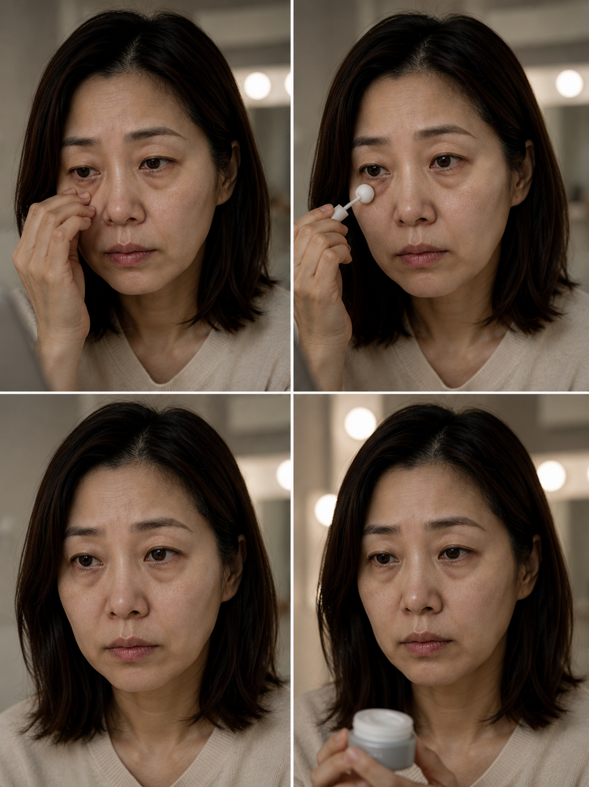
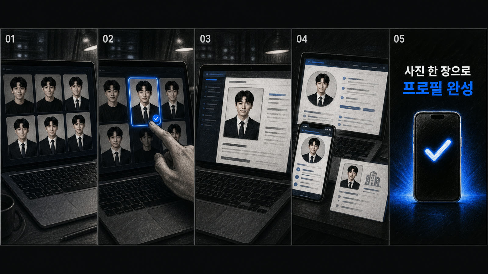
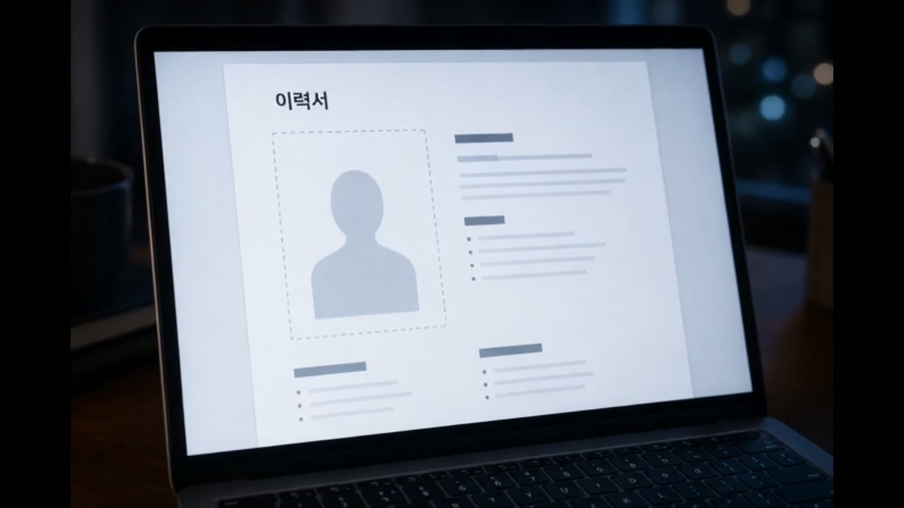
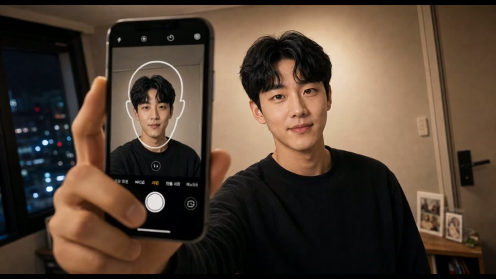
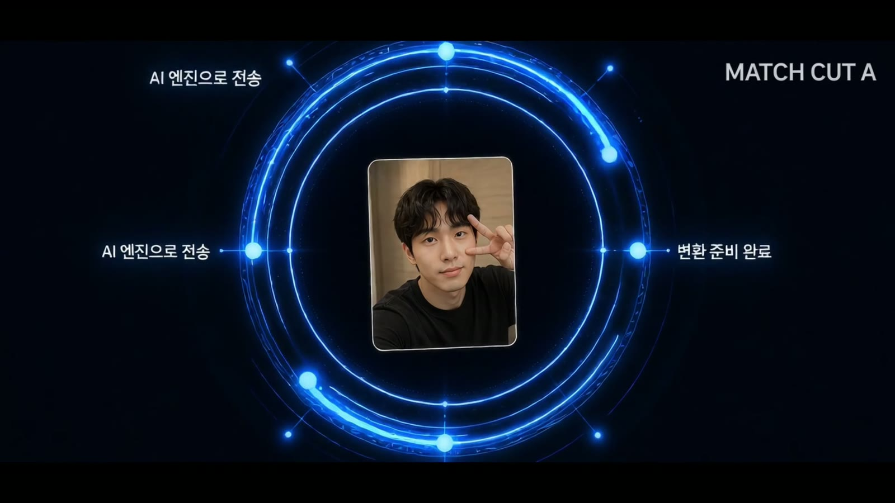

브랜드 목표, 타깃, 컷 목적을 먼저 정리하고 이미지/영상 시안으로 전환합니다.

Hiring Fit / AI Visual Content Designer
AI Visual Content Designer
광고 키비주얼, 숏폼 영상 콘티, 프롬프트 룰, 컷 선별·보정, 캠페인 시안 패키지 제작.
브랜드/광고팀의 브리프를 키비주얼, 숏폼 후킹, 스토리보드, 기준 이미지, 프롬프트 규칙으로 쪼개 실제 광고처럼 검토 가능한 이미지/영상 패키지로 만듭니다.
BUILT WITH CODEX
브리프를 보여줄 수 있는 캠페인으로 바꾸고, 공개 가능한 웹 경험까지 완성합니다.
기준 이미지, 금지 조건, First/Last Frame, 실패 컷 선별로 일관성을 잡습니다.
후킹, BGM/TTS, 스토리보드, 대표 컷, 제작 노트까지 팀이 확인하기 쉽게 묶습니다.
Hiring Fit
AI 광고 비주얼 제작자 / 숏폼 캠페인 디렉터
툴
Seedance · Grok · Suno · ChatGPT + Codex 제작 파이프라인
Deliverables
Key Visual, Short-form Storyboard, Prompt Rule, Reference Board, Final Cut Selection
Featured Reel
편견을 벗다, 다양성을 입다, 무진장을 만나다.
Case 01 / Team Campaign
MUSINSA MUJINJANG
3인 팀 프로젝트 · 개인 기여도 55%
키비주얼, 세대별 전신 룩, 스토리보드와 First/Last Frame 제어까지 캠페인 시스템으로 연결.
Case 02 / Product Campaign VEIL 가상 향수 브랜드 캠페인제품 실루엣, 모델 광고, 전광판 목업, 숏폼 영상까지 하나의 브랜드 규칙으로 확장.
Case 03 / Character System SAINT 캐릭터 세계관 제작 아카이브캐릭터 기준 이미지, 오프닝 영상, 보정 사례를 묶어 반복 가능한 제작 기준으로 정리.
Recruiter Checklist
실무 투입 가능 범위
포지션 적합성, 맡길 수 있는 산출물, 협업 방식, AI 제작 통제력을 대표 케이스와 제작 노트에서 확인할 수 있게 정리했습니다.
브랜드, 제품, 캐릭터 캠페인 시안을 빠르게 구체화하는 실무형 크리에이터로 투입 가능합니다.
키비주얼, 콘티, 스토리보드, 영상 컷, 프롬프트 룰, 제작 노트, 수정 기준을 함께 정리합니다.
브리프 해석, 레퍼런스 정리, 컷 설계, 중간 시안, 실패 컷 제거, 보정 방향까지 이어서 봅니다.
기준 이미지, 금지 조건, First/Last Frame, 프롬프트 분리로 인물·제품·톤 일관성을 맞춥니다.
예쁜 이미지가 아니라 타깃, 후킹, 사용처, 수정 기준 중심으로 시안을 설명합니다.
기업 과제형 후기 광고, MUSINSA 팀 프로젝트, VEIL 브랜드 패키지에서 업무 범위를 확인할 수 있습니다.
Built with Codex / Pipeline Build Case
Codex와 직접 구축한 AI 콘텐츠 제작 파이프라인
이 포트폴리오는 AI 이미지를 모은 결과물이 아니라, 프로젝트마다 반복 가능한 제작 방식을 설계하고 Codex로 구조화·구현·검수·배포까지 연결해 실제 산출물로 검증한 파이프라인 구축 사례입니다.
BUILT WITH CODEX
흩어진 AI 시안을, 설명 가능한 캠페인 시스템으로.
Codex와 함께 프로젝트 규칙을 정리하고, 반복 수정과 자산 검수, 반응형 웹 구성, Vercel 공개까지 하나의 제작 환경으로 만들었습니다.
VISUAL PROOF / 3 PROJECTS
실제 작업 이미지로 확인하는 파이프라인 적용 사례
기준 이미지를 고정하고, 프로젝트 규칙을 설계한 뒤, 캠페인 결과물로 확장한 과정을 대표 컷과 함께 정리했습니다.

제품 비율과 로고를 기준 이미지로 고정하고, 수면 굴절광·꽃·기포 움직임을 향별 연출 규칙으로 묶어 최종 광고 영상과 제출 사이트로 완성했습니다.
제품 형태 잠금→향별 모션 설계→6초 필름 완성

얼굴·의상 기준표를 잠그고, 오프닝 장면·실패 컷 판별·이미지 보정 규칙까지 하나의 시스템으로 묶었습니다.
캐릭터 잠금→장면 설계→일관성 검수

오렌지 키비주얼을 기준으로 세대별 스타일·전환 효과·First/Last Frame 제어를 실제 영상 설계에 적용했습니다.
KV 고정→컷 설계→영상 제어
아이디어와 AI 시안을 실제 광고 산출물, 제작 기준, 공개 페이지로 연결하는 작업 시스템.
파트별 목적과 기준 이미지를 먼저 고정하고, 결과물은 선별·보정·재배치 과정을 거쳐 포트폴리오화.
웹 구조 설계, 카피·파일 정리, 반응형 구현, 자산 오류 검수, 반복 수정과 Vercel 배포까지 수행.
Planning Template
브랜드, 캐릭터 세계관, 캠페인 목적을 프로젝트 단위로 정리하는 기획 템플릿을 구축.
Prompt Modules
이미지, 영상, 보정 프롬프트를 목적별 모듈로 나눠 반복 수정 가능한 기준 문장으로 관리.
Review Criteria
완성 컷, 실패 컷, 보정 기준, 사용 가능한 컷을 비교하며 선별 기준을 세움.
Codex Pipeline Build
기획, 생성, 선별, 보정, 파일 구조화, 웹 구현을 하나의 반복 가능한 제작 파이프라인으로 연결.
Web Packaging & Deploy
섹션 구조, 카피, 이미지 배치, 반응형 레이아웃, 파일 정리와 Vercel 배포까지 완성.
Revision Loop
배포 후에도 문구, 구성, 이미지 순서, 강조점을 점검하고 빠르게 수정하는 운영 루프 구축.

Corporate Assignment / Review Ad
실사형 광고 후기 영상
눈밑 꺼짐, 주름, 리프팅 효과 제품 문의 흐름을 바탕으로 만든 기업과제용 광고 후기 영상입니다. 초반 0~3초는 후킹을 강하게 잡고, 이후 BGM, TTS, 영상 소스, 스토리보드까지 직접 제작했습니다.
역할: AI 비주얼 콘텐츠 기획·제작
툴: Seedance, Grok, Suno, ChatGPT, Codex
업무: 콘셉트, 스토리보드, 프롬프트, 이미지/영상 디렉션
Reference Video
눈밑지 레퍼런스 영상
제품 후기형 광고 톤과 문제 인지 흐름을 잡기 위해 첨부한 레퍼런스 영상입니다.





Corporate Assignment / Beauty Campaign
LE FAIRY 퍼퓸밤 과제
Assignment / Commercial Beauty
Scent below the surface
실제 제품의 형태와 비율을 유지하면서 수면 굴절광, 꽃과 기포의 움직임으로 세 가지 향을 시각화한 6초 퍼퓸밤 과제 영상입니다.
역할: AI 비주얼 콘텐츠 기획·제작
툴: ChatGPT, SuperGrok Agent, Codex
업무: 콘셉트, 이미지·영상 프롬프트, 모션 디렉션, 웹 패키징
Production Control
AI 결과물을 직접 통제한 제작 과정
단순 생성이 아니라 기준 이미지, 컷 구조, 프롬프트 금지 조건, 후반 편집 기준을 묶어 같은 인물과 캠페인 톤이 유지되도록 설계했습니다.
Part 2 / SAINT
캐릭터 세계관 제작 아카이브
Yura / Yuri 캐릭터를 한 번 생성하고 끝내지 않고, 오프닝 영상과 반복 가능한 캐릭터 기준표, 보정 규칙, 장면 설계까지 묶은 제작 시스템입니다.
얼굴, 헤어, 의상, 색감, 세계관 톤을 기준 이미지로 고정했습니다.
장면 목적, 카메라, 조명, 금지 요소를 컷별 제작 조건으로 정리했습니다.
프로필, 키비주얼, 스토리보드, 영상 기준을 하나의 패키지로 보여줍니다.
Anime Opening
애니메이션 오프닝
Opening Film
Yura / Yuri 세계관의 다크 판타지 톤을 영상으로 보여주는 오프닝 사례.
Character Consistency
캐릭터 일관성 테스트


Before / After
이미지 보정 사례


SAINT Package
Character Campaign Board
캐릭터, 키비주얼, 세계관, 스토리 플로우, 영상 기준을 하나의 제작 패키지처럼 묶은 SAINT 파트의 기준 보드입니다.
- Brand mood: dark fantasy, silver, restrained red
- Visual assets: profile sheet, portraits, story board, key stills
- Process: character lock, scene revision, consistency review, web packaging
Production Process
제작 방향 및 수정 과정
방향 설정
포트폴리오 목적, 결과물 종류, 필요한 장면 수, 영상 구성 방식을 먼저 고정.
기준 이미지 잠금
캐릭터 얼굴, 헤어, 색감, 의상, 세계관 톤을 기준 이미지로 정리.
장면 설계
장면 목적, 카메라, 조명, 색감, 금지 요소를 제작 조건으로 정리.
수정과 검수
일관성 오류, 손/얼굴 문제, 색감 이탈, 과한 텍스트를 기준에 맞춰 보정.
웹 패키징
무거운 영상 파일은 제외하고 외부 영상 슬롯과 압축 이미지로 구성.
Production Notes
상세 제작 노트
Character Rule
캐릭터의 얼굴, 헤어, 의상, 표정, 반복 기준을 고정하는 기준표.
Video Rule
초반 후킹, 장면 전환, 카메라 움직임, 결말 프레임을 정리한 영상 설계.
Correction Rule
이미지 실패 지점과 보정 목표를 분리해 다시 제작하거나 리터칭하는 기준.
Part 3 / MUSINSA MUJINJANG CONTEST
무신사 무진장 AI 공모전
오렌지 키컬러, 블랙 스타일링, 세대별 캐릭터 룩, 숏폼 캠페인을 하나의 무신사 무진장 패션 캠페인 시스템으로 정리한 3인 팀 프로젝트입니다. 개인 작업 범위는 룩 디자인, 키비주얼 기준, 스토리보드, 영상 프레임 제어입니다.
MUJINJANG CONTEST
3인 팀 프로젝트 / 무신사 패션 캠페인 제작 아카이브 / 기여도 55%
오렌지 키컬러와 블랙 스타일링을 기준으로 캐릭터 룩을 정리했습니다.
스토리보드, 전환 프레임, 레퍼런스 분할 운용까지 제작 문제를 해결했습니다.
KV, 전신 룩, 숏폼 영상, 제작 이슈 해결 과정을 한 번에 검증할 수 있습니다.
Campaign Film
편견을 벗다, 다양성을 입다, 무진장을 만나다.
Final Short-form Film
글로벌 다양성을 시각화한 캠페인 필름
본 영상은 인종, 세대, 문화의 경계를 허무는 무신사의 글로벌 다양성을 감각적인 비주얼 리듬으로 시각화한 작품입니다. 한국의 전통 신앙(굿)과 글로벌 패션, 동서양의 예술적 교차를 통해 ‘틀을 깨는 무신사’의 행보를 조명하고, 올해로 5주년을 맞이한 ‘무진장’의 압도적인 성공을 기원하는 축제의 장을 연출했습니다.
YouTube Shorts에서 보기Campaign Key Visual
무진장 캠페인 기준 KV
Part 3 Campaign Base
브랜드 컬러와 타이포를 먼저 고정
강한 오렌지 배경과 블랙 브러시 타이포를 캠페인 기준으로 두고, 직접 디자인한 모델/키즈/캐릭터 전신 컷의 포인트 컬러를 이 KV에 맞춰 정리했습니다.
- Key color: MUSINSA orange, black type, white negative space
- Visual role: event KV, styling reference, portfolio campaign anchor
- Contribution: 55% / full-body look design by SAINT
Look Design
직접 디자인한 전신 룩 아카이브
첨부한 전신 이미지들은 모두 직접 디자인한 무신사 무진장 공모전용 룩입니다. 키즈, 스트리트, 수트, 블랙 오렌지 액센트, 세대별 캐릭터를 같은 캠페인 톤 안에 들어오도록 정리했습니다.


Production Notes
Kids Pair Look
네이비와 화이트를 중심으로 키즈 페어 룩을 맞추고, 작은 오렌지 태그로 캠페인 컬러를 연결.
Elder Black Look
블랙 로브의 레이어와 주름 질감을 살리고, 오렌지 백을 한 점의 브랜드 포인트로 사용.
Skate Look
오렌지 헬멧, 네이비 후디와 화이트 셔츠 변주, 공중 동작과 보드의 방향성을 함께 고정.
Storyboard
무신사 캠페인 스토리보드
룩 디자인을 영상 동선으로 확장하기 위해 정리한 스토리보드입니다. 스케이트, 런웨이, 캘리그래피, 스모크 핸드오프, 샤먼 퍼포먼스처럼 서로 다른 장면을 #FE4900 오렌지 시그널과 블랙 스튜디오 톤으로 연결했습니다.


Motion Notes
Brush 4s Motion
4초 안에 로우앵글, 탑뷰, 후방 추적을 연결하고 #FE4900 액체 궤적을 컷 전환의 기준으로 사용.
Age Runway Flow
엘더, 키즈, 유스, 미들에이지를 지나 다시 엘더로 돌아오는 6컷 런웨이 흐름을 오렌지 스모크로 연결.
Shaman Ritual
흰 셔츠와 블랙 와이드 팬츠, 부채와 방울 동작을 중심으로 파티클이 리듬처럼 터지도록 설계.
Frame Control Skill
First Frame / Last Frame Skill
영상 생성 단계에서 시작점과 도착점을 직접 지정해 장면의 흔들림을 줄인 작업입니다. 처음 두 컷은 전환 효과를 직접 넣어 컷 사이의 물성을 맞춘 사례이고, 세 번째 컷은 라스트 프레임을 프롬프트에 직접 넣어 도착 장면을 고정한 사례입니다.


First / Last Frame Examples


Reference Solving
Seedance 2.0 레퍼런스 운용 이슈
Seedance 2.0 작업 중 얼굴 클로즈업 레퍼런스가 필터링에 걸리는 상황이 있어, 원본 얼굴 컷과 4x4 그리드 분할 컷을 함께 운용했습니다. 그리드 이미지는 얼굴 전체를 직접 노출하지 않고도 비율, 헤어, 메이크업, 조명 톤을 전달하는 우회 레퍼런스로 사용했습니다.
얼굴 레퍼런스 제한
인물 얼굴이 크게 잡힌 컷에서 제한이 발생해 캐릭터 인상과 디테일 유지가 흔들렸습니다.
원본 + 4x4 분할 운용
원본 컷으로 최종 인상과 톤을 확인하고, 분할 그리드 컷으로 형태 정보만 분리해 레퍼런스 안정성을 높였습니다.
Grid Ignore 규칙
작업 조건에 grid, white gutters, mosaic layout을 무시하고 하나의 연속된 얼굴 레퍼런스로 보라는 규칙을 추가했습니다.


Reference Note
Grid ignore: ignore grid, ignore white gutters, do not generate a mosaic or tiled layout. Treat the divided reference as one continuous face reference, preserving only facial proportion, hair, makeup, material detail, and lighting tone.
Part 3 Production Notes
MUSINSA 제작 노트
Campaign Rule
오렌지 키비주얼, 블랙 브러시 타이포, 세일 이벤트 에너지, 명확한 상업 레이아웃을 기준으로 고정.
Styling Rule
블랙 스타일링에 오렌지 포인트를 하나씩 배치하고 전신 실루엣이 읽히도록 조명과 포즈를 정리.
Correction Rule
#FE4900 시그널 컬러, 블랙 스튜디오 바닥, 동작 방향, 캐릭터 실루엣을 유지하며 텍스트 흔들림과 크롭 문제를 제거.
Selection Rule
KV, 전신 룩, 스토리보드가 같은 오렌지-블랙 브랜드 규칙 안에서 이어지는 컷만 선별.
Other Works
그외 작업물
공간 무드, 빛, 패브릭 질감, 숏폼 영상까지 확장한 AI 비주얼 작업입니다.
AI App Commercial
AI 이력서 프로필 사진 앱 광고
01
선별 스토리보드
문제 제기, 앱 진입, AI 완성, 엔드카드가 각각 5컷으로 이어지는 스토리보드 4장입니다.



02
완성 영상 대표 스틸
완성 영상은 별도 임베드로 연결하고, 페이지에는 주요 전환 프레임 4장만 배치했습니다.




Short-form Video
추가 숏폼 영상
Other Work Film
Soft cinematic mood short
역할: AI 비주얼 콘텐츠 기획·제작
툴: Seedance, Grok, Suno, ChatGPT, Codex
업무: 콘셉트, 스토리보드, 프롬프트, 이미지/영상 디렉션
Image Works
공간 무드 이미지

역할: AI 비주얼 콘텐츠 기획·제작
툴: Seedance, Grok, Suno, ChatGPT, Codex
업무: 콘셉트, 스토리보드, 프롬프트, 이미지/영상 디렉션

역할: AI 비주얼 콘텐츠 기획·제작
툴: Seedance, Grok, Suno, ChatGPT, Codex
업무: 콘셉트, 스토리보드, 프롬프트, 이미지/영상 디렉션

역할: AI 비주얼 콘텐츠 기획·제작
툴: Seedance, Grok, Suno, ChatGPT, Codex
업무: 콘셉트, 스토리보드, 프롬프트, 이미지/영상 디렉션

역할: AI 비주얼 콘텐츠 기획·제작
툴: Seedance, Grok, Suno, ChatGPT, Codex
업무: 콘셉트, 스토리보드, 프롬프트, 이미지/영상 디렉션